Stony Brook University
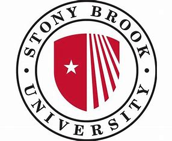
I attended Stony Brook University from 2014 to 2019, where I recieved both a B.E. and M.S. in mechanical engineering.
Senior Design - Walk Assist Device
Summary
For my senior design project, I worked with 3 other students to design a walk assist device for rehabilitation. This was composed of two modified Klann linkages side by side that were designed to move the user's legs through a path that closely mirrored the natural human gait cycle. The hip and knee joint angles, as well as the path traced by the end of the linkage, near the foot are all critical in replicating a natural motion. I was personally responsible for all of the mechanical design on this project, including the linkage design.
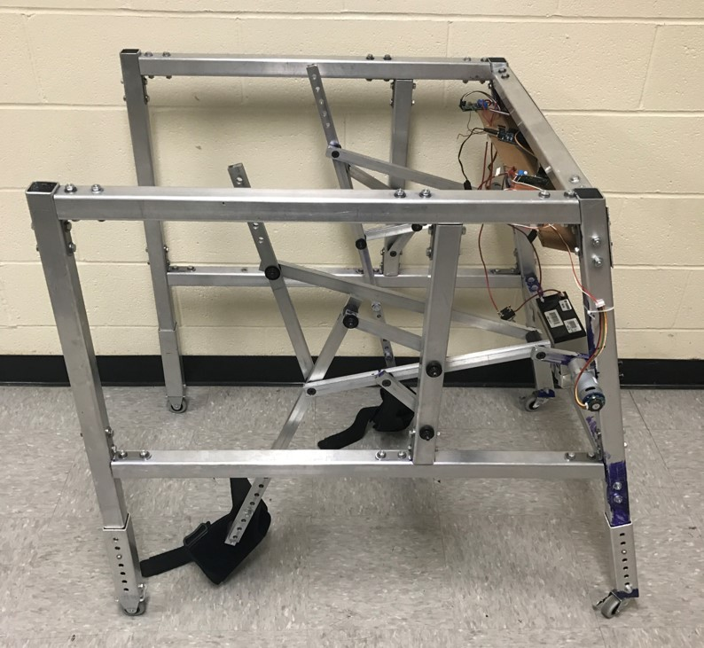
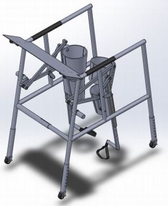
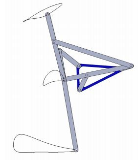
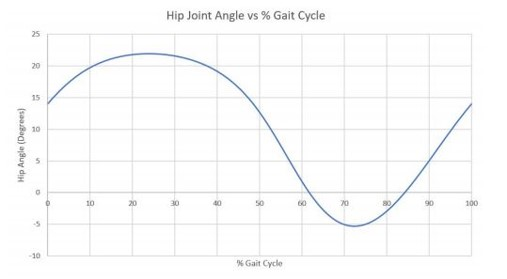
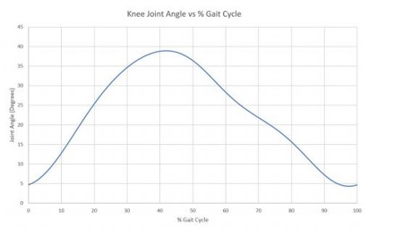
Skills Used:
- Solidworks
- Linkage Design
- machining
- MotionGen
Stony Brook Motorsports
Summary
I joined Stony Brook Motorsports (Stony Brook's Baja SAE Team) during my sophomore year as a general body member and became the team's CVT subsystem leader during my senior year. As the CVT subsystem leader, I was responsible for selecting and tuning the car's CVT in addition to designing a protective enclosure that also provided adequate cooling. Testing was done on an engine dynamometer controlled by LabView and data was captured in MATLAB.
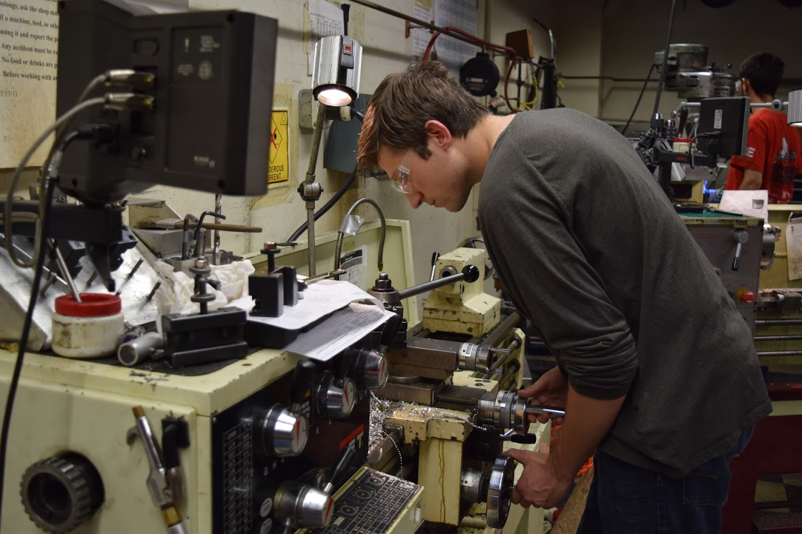
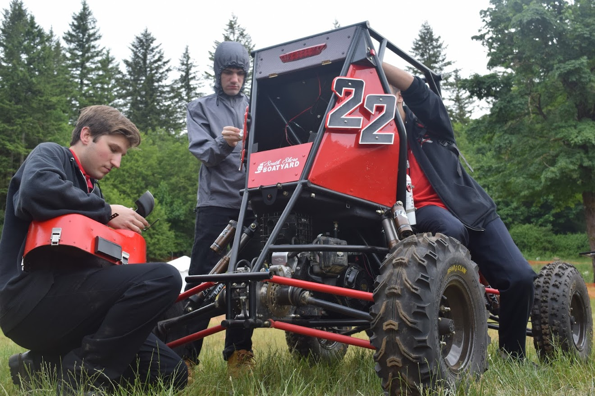
Skills Used:
- Solidworks
- machining (lathe, milling machine)
- 3D printing
- MATLAB
- LabView
Frog Robot
Summary
The first hands-on project I was involved in at Stony Brook was the robot design project as a freshman in MEC 101. For this project, we built an Arduino-controlled frog robot that used a mechanism consisting of a partial gear to compress and rapidly release a pair of mousetraps and perfrom a jump. The robot also had a motorized tongue that was controlled by a servo and triggered whenever an ultrasonic sensor detected movement. The electronics were provided for this project, but there was no budget provided for other materials, so the structure is composed of cardboard and Legos. I was involved in both the mechanism design and the Arduino programming for this project.
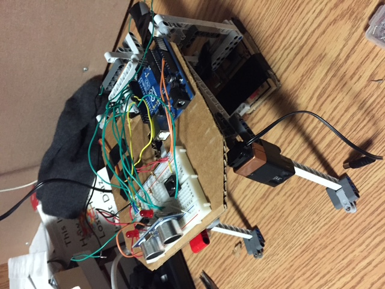
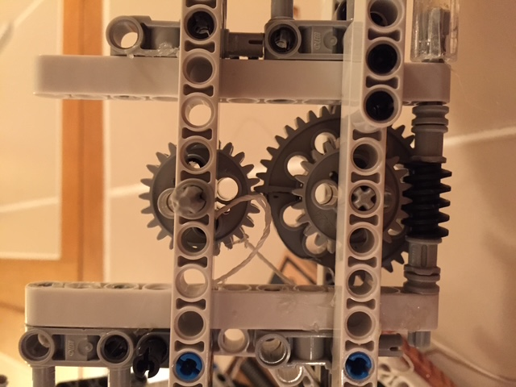
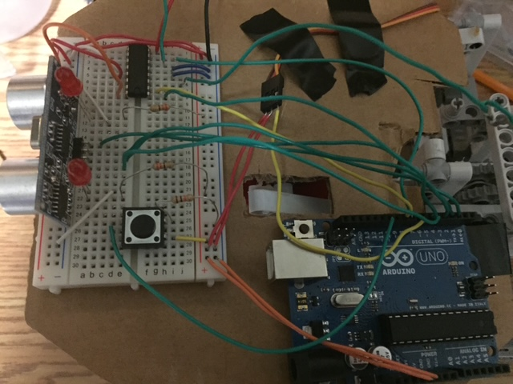
Skills Used:
- Arduino
- circuit design
- mechanism design